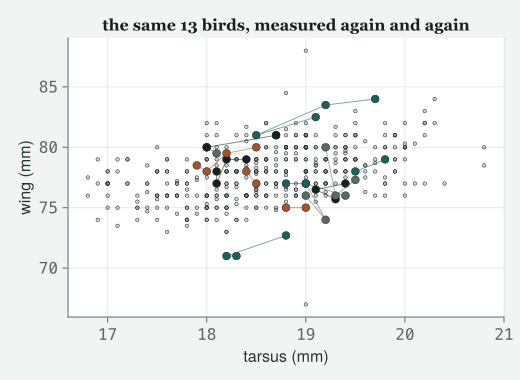
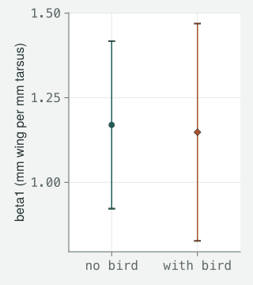
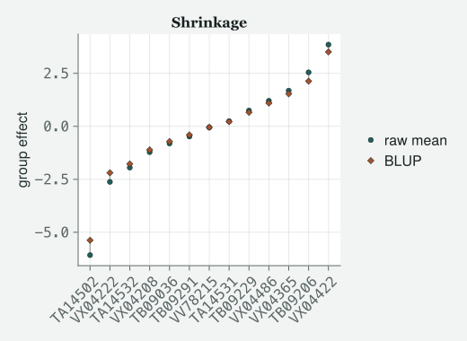
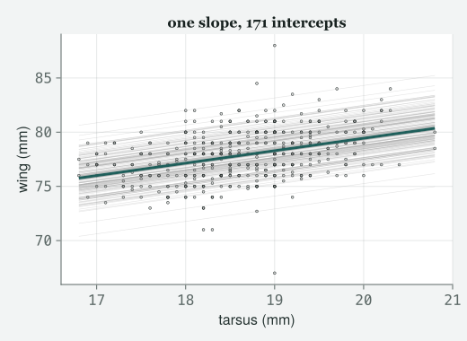
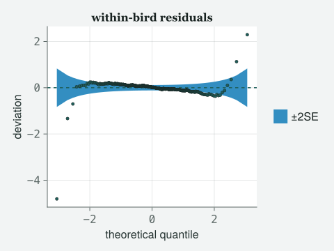

Four hundred and fifty-nine measurements, one hundred and seventy-one sparrows, and a standard error that was wrong by nearly a quarter until somebody noticed the same bird was in the file four times.
Draft
All ten classes of version 1 run from start to finish, with Appendix A, the preface and the coda. Every number and figure on this page comes out of code that was run to make the page. The writing is still a draft.
Engines DRM.jl 0.7.1 at 26f4c4ddc (Julia 1.10.0) · drmTMB 0.7.0 (R 4.6.0) Provenance Every block of Julia on this page was run, and its output printed, when the page was made — including the error. Nothing is pasted in from memory. The one block of R output was run once by hand, on 2026-09-06, on the same data file, and is labelled as such where it appears. Caveat The data are real. These are the Lundy Island house sparrows of the author’s 2012 course, read directly from the archived data/2012/BodySize.csv with its repeated measurements intact (provenance in data/2012/README.md). Nothing here is simulated.
A note on the data, and it is a short one for once. Class 2 used one row per bird. This chapter uses the file that Class 2’s file was made from, with every measurement still in it, because the repeated measurements are the entire subject of the hour. They are real house sparrows, really measured more than once. The only thing this chapter does to them is drop the rows where the measurement of interest is missing, in a cell, in front of you.
Objectives
By the end of this class you should be able to:
Recognise, from the data file alone, when your rows are not independent, and say what independence was buying the model.
Fit a random intercept with (1 | group) and read the second variance component it prints.
Say what happens to a standard error when you stop pretending repeated measurements are separate individuals, and predict the direction before you fit.
Compute a repeatability as a ratio of variance components, and say what it is a ratio of.
Explain what a random intercept is by describing the shrinkage picture, without using the word “random”.
The class
Itchy’s office, 9:00 am. TOTO has arrived with a laptop and an air of
having already done the homework, which is always the dangerous state.
MOMO is reading the data file itself rather than the output, which is
the safe one. EDDIE is here because Class 6 is the week he has been
waiting for.
Itchy
Class 2 gave you one line through a cloud of sparrows. Every bird was
one dot. Today I am giving you the file that cloud was built from, and
it has more rows in it than it has birds.
Toto
More rows than birds.
Itchy
Considerably more. We caught these birds more than once. Load it and
look before you model, same as always.
The first three rows are the same bird on three different days. Fit it
anyway. I want you to make the mistake in public, because it is the most
common mistake in the whole of behavioural ecology and you will not
respect it until you have made it.
drm(bf(@formula(Wing ~ Tarsus)), Gaussian(); data = raw)
No, that is a different one, and it is real data teaching you its first
lesson before you get to the statistics. Read the first line of the
error and stop there: everything printed below it is Julia’s own map of
where inside the engine it stopped, written for the engine’s authors and
not for you. The first line says it wants a number and it was handed a
piece of text. Momo, you were reading the file. Why is a wing length a
piece of text?
Momo
Because one of them is not a number. It says NA.
Itchy
It says NA, in a file written in 2009, by a person, in a
program that wrote missing values that way. Julia read the whole column
as text because one cell in it was text, and then the model refused the
column. Tell the reader what NA means and it becomes a
number again.
raw = CSV.read("../data/2012/BodySize.csv", DataFrame; missingstring ="NA")println("missing values per column:")println(describe(raw, :nmissing))sparrows =dropmissing(raw, [:Tarsus, :Wing])mkpath("../data/ch6")CSV.write("../data/ch6/sparrows-repeated.csv", sparrows)n =nrow(sparrows)birds =length(unique(sparrows.BirdID))dropped =nrow(raw) - n@printf("kept %d rows on %d birds; dropped %d row for a missing wing\n", n, birds, dropped)describe(sparrows[!, [:Tarsus, :Wing]], :mean, :std, :min, :max)
missing values per column:
8×2 DataFrame
Row │ variable nmissing
│ Symbol Int64
─────┼────────────────────
1 │ BirdID 0
2 │ Sex 0
3 │ Tarsus 0
4 │ BillL 9
5 │ BillW 9
6 │ Tail 14
7 │ Wing 1
8 │ Weight 0
kept 459 rows on 171 birds; dropped 1 row for a missing wing
2×5 DataFrame
Row
variable
mean
std
min
max
Symbol
Float64
Float64
Float64
Float64
1
Tarsus
18.6336
0.771438
16.8
20.8
2
Wing
77.863
2.27455
67.0
88.0
Itchy
459 rows. 171 birds. Momo, say the ratio out loud.
Momo
Under three measurements per bird, on average.
Itchy
And not the same number for every bird, which will matter in about forty
minutes. Count them.
per_bird =combine(groupby(sparrows, :BirdID), nrow =>:k)counts =sort(unique(per_bird.k))for k in counts@printf("%d birds measured %d times\n", count(==(k), per_bird.k), k)endmean_k =mean(per_bird.k)@printf("\nmean measurements per bird: %.4f\n", mean_k)
85 birds measured 2 times
55 birds measured 3 times
31 birds measured 4 times
mean measurements per bird: 2.6842
Toto
So some birds are in the file twice and some four times.
Itchy
Which means that if you treat rows as individuals, some sparrows get
four votes and some get two. Look at what that actually looks like. A
handful of birds, picked at even intervals through the range so I am not
choosing my evidence, with each bird’s own measurements joined up.
# Birds at even intervals through the ordering by mean wing length, so the# choice of which to show is a rule and not a preference.bird_ids =sort(unique(sparrows.BirdID))bird_mean = [mean(sparrows.Wing[sparrows.BirdID .== b]) for b in bird_ids]shown = bird_ids[sortperm(bird_mean)][1:14:length(bird_ids)]fig =Figure(size = (520, 380))ax =Axis(fig[1, 1]; xlabel ="tarsus (mm)", ylabel ="wing (mm)", title ="the same $(length(shown)) birds, measured again and again")scatter!(ax, sparrows.Tarsus, sparrows.Wing; markersize =5, color = (:grey, 0.35))for (i, b) inenumerate(shown) rows = sparrows.BirdID .== b# dots and this bird's own line share one colour source (the 4-colour house# cycle), so a bird's line is never a different hue from its own pointsscatter!(ax, sparrows.Tarsus[rows], sparrows.Wing[rows]; markersize =11, color =Cycled(mod1(i, 4)))lines!(ax, sparrows.Tarsus[rows], sparrows.Wing[rows]; color =Cycled(mod1(i, 4)), alpha =0.55, linewidth =1)end# how far a bird moves between its own captures, against how far the cloud spansspans = [maximum(sparrows.Wing[sparrows.BirdID .== b]) -minimum(sparrows.Wing[sparrows.BirdID .== b]) for b in shown]span_typical =round(median(spans), digits =1)span_worst =round(maximum(spans), digits =1)cloud_span =round(maximum(sparrows.Wing) -minimum(sparrows.Wing), digits =1)fig

Figure 1: Wing against tarsus for every measurement in grey, with a handful of birds picked at even intervals through the ordering by mean wing length highlighted in colour, each bird’s own recaptures joined in order. A bird’s own recaptures wander by a millimetre or two while the whole cloud spans more than twenty — the repeated-measures structure the whole chapter is about, visible before any model is fitted.
Eddie
The joined-up points stay in a small patch. The middle bird here moves
1.3 mm between its own captures and the widest moves 4.0, against a
cloud 21.0 mm tall. A bird stays roughly where it was.
Itchy
A bird stays roughly where it was. Hold on to that sentence, because by
the end of the hour we will have put a number on it and given the number
a name.
The model that pretends
Itchy
First, the model Class 2 taught you, on all 459 rows, as if they were
459 separate sparrows.
lm_fit =drm(bf(@formula(Wing ~ Tarsus)), Gaussian(); data = sparrows)lm_fit
It worked, and the slope looks sensible. The scale block has a
p-value, and I am ignoring it on purpose, because the heading
says its null is σ = 1 and Class 2 taught me that is a question about
millimetres rather than about birds.
Itchy
The slope is sensible. The slope is not the problem and it will
barely move all morning. Momo, you have been quiet.
Momo
My problem is the sentence underneath it. Class 2 said every wing is
drawn from its own normal distribution, the centre slides along a line,
the width is constant. That sentence has a fourth claim hiding in it
that nobody said out loud.
Itchy
Say it out loud, then.
Momo
That the draws are independent. That knowing one row tells you nothing
about the next one.
Itchy
(writes on the board)
μ is where the birds are. σ is how spread out they are. And
every model so far has quietly added: and no two rows know each
other.
Itchy
That is the constant this class frees. Not the link, not the variance
function, not the slope. The correlation between rows, which
every model up to now has held at zero. And in this file it is
obviously not zero, because two rows from the same bird are two
measurements of one wing.
The model that does not
Itchy
Here is the whole change. One term.
μ_ij = β0 + β1 x_ij + u_j, with u_j ~ N(0, σ_u²) and y_ij ~
N(μ_ij, σ²)
Itchy
Measurement i on bird j. β0 the intercept, β1 the
slope on tarsus, and u_j the bird’s own nudge up or down, drawn from a
normal distribution centred on zero with spread σ_u. σ is the residual
spread, doing the same job it has done since Class 2, except that now it
is the spread within a bird rather than the spread of
everything.
Itchy
One housekeeping note, because these six symbols are the ones you keep.
β0, β1, u_j, σ_u, σ and R mean the same things for the rest of
the book, and only the grouping changes. Today j is a
bird and the repeated thing is a recapture. In Class 8 Momo brings her
tadpoles and j is a pond, with the tadpoles inside it playing
the part today’s recaptures play. Nothing in the algebra moves; you
relabel j and carry on.
Eddie
So u_j is a per-bird intercept.
Itchy
u_j is a per-bird intercept that we do not estimate as 171 separate
parameters. We estimate its spread. That distinction is the
whole of Class 6 and I will come back to it when Eddie asks me the
question he is about to ask. In code, one term in the formula.
ri_fit =drm(bf(@formula(Wing ~ Tarsus + (1|BirdID))), Gaussian(); data = sparrows)ri_fit
Distributional regression fit (Gaussian)
nobs = 459 logLik = -867.5915 converged = true
Residual SD (response scale) = 1.0969 dof_residual = 455
Mean model (μ):
H0: coefficient = 0
Coef. Std.Error z Pr(>|z|)
(Intercept) 56.4795 3.0547 18.4893 2.519e-76
Tarsus 1.1481 0.1639 7.0049 2.472e-12
Scale model (log σ):
H0: coefficient = 0 on log σ
intercept ⇔ σ = 1 (unit-dependent); slope ⇔ equal dispersion
Coef. Std.Error z Pr(>|z|)
(Intercept) 0.0925 0.0416 2.2241 0.02614
Random-effect SD (log σ_b):
H0: coefficient = 0 on log σ_b
NOT the σ_b = 0 boundary
Coef. Std.Error z Pr(>|z|)
BirdID 0.5620 0.0626 8.9803 2.702e-19
Toto
Same verb, same box, same family. And a whole new block at the bottom.
Itchy
A whole new block, and I want you to read its heading before you read
its numbers, exactly as you did upstairs. It reports the bird-level
spread on the log scale with a z and a p, and then it
tells you what that test is not. Read that line out,
Momo.
Momo
“NOT the σ_b = 0 boundary.”
Itchy
The engine calls the bird spread σ_b, for “between”; it is the σ_u on
the board, and I will keep calling it σ_u. That heading is the engine
warning you off the one question you were about to ask it. You want to
know whether the birds differ at all, and that is a question about a
variance being zero. A boundary here means the edge of the values a
number is allowed to take: a variance can be zero but never less, so “is
it zero?” is a question asked from the edge, and the usual test does not
work there. The p-value printed on that line is not answering
it. The engine will not stop you misreading it, but it will tell you, in
the heading, that you are about to.
Toto
So what do I do instead?
Itchy
Today, nothing: you look at the two spreads and the ratio between them,
which is what the hour is about, and you notice that a random intercept
is worth having for reasons that have nothing to do with a
p-value. Class 8 gives that boundary an hour of its own, and it
is the reason the hour is needed. Now put the two fits side by side, and
watch which numbers move.
no bird with bird ratio
beta0 56.0685 56.4795 1.0073
beta1 1.1696 1.1481 0.9816
SE(beta0) 2.3560 3.0547 1.2966
SE(beta1) 0.1263 0.1639 1.2974
Itchy
A ratio in a table is a number you have to hold in your head. Here is
the same comparison drawn, so you do not have to.
ci_lm_b1 =confint(lm_fit)[2] # beta1's CI, the model that pretendsci_ri_b1 =confint(ri_fit)[2] # beta1's CI, the model that does notfig =Figure(size = (320, 360))ax =Axis(fig[1, 1]; xticks = (1:2, ["no bird", "with bird"]), ylabel ="beta1 (mm wing per mm tarsus)")xlims!(ax, 0.5, 2.5)rangebars!(ax, [1], [ci_lm_b1.lower], [ci_lm_b1.upper]; whiskerwidth =8, color =Cycled(1))rangebars!(ax, [2], [ci_ri_b1.lower], [ci_ri_b1.upper]; whiskerwidth =8, color =Cycled(2))scatter!(ax, [1], [b_lm[2]]; markersize =10, color =Cycled(1))scatter!(ax, [2], [b_ri[2]]; markersize =10, marker =:diamond, color =Cycled(2))fig

Figure 2: beta1, the coefficient on tarsus, from the no-bird and with-bird fits: the same point estimate — circle for no-bird, diamond for with-bird — plus or minus about two standard errors, the Wald interval. The two points sit almost on top of each other; the interval around the with-bird fit is visibly wider, because it is paying for the recaptures the no-bird fit counted as independent birds.
Toto
The slope hardly changed.
Itchy
The slope hardly changed. Now read the row underneath it.
Momo
The standard error went up by a factor of 1.3.
Itchy
It went up by a factor of 1.3, which is the same thing as saying the
first model’s standard error was 22.9% too small. Toto, what would you
have done with the small one?
Toto
Put it in a table. With a confidence interval around it.
Itchy
With a confidence interval 22.9% too narrow, and a p-value to
match, in a paper, about sparrows. That is what independence was buying
you: confidence it had not earned.
Momo
How much had it earned? If 459 rows are really 171 birds, the standard
error should have been much further out than that.
Itchy
Good, and that is the right instinct pushed one step too far. Turn the
ratio back into a count.
# A standard error scales like 1/sqrt(n), so a ratio of standard errors turns# back into the sample size the honest fit behaved as though it had.n_eff = n / se_ratio^2ratio_if_birds =sqrt(n / birds)@printf("rows : %d\n", n)@printf("birds : %d\n", birds)@printf("effective sample size implied by the SEs : %.1f\n", n_eff)@printf("SE ratio we measured : %.4f\n", se_ratio)@printf("SE ratio if every bird counted once : %.4f\n", ratio_if_birds)
rows : 459
birds : 171
effective sample size implied by the SEs : 272.7
SE ratio we measured : 1.2974
SE ratio if every bird counted once : 1.6384
Itchy
The truth is between the two counts, and the arithmetic
says where. Not 459 independent measurements, not 171 either, but about
273. If a bird really were one indivisible piece of evidence, the
standard error would have gone up by a factor of 1.64 rather than 1.3.
Toto
So the extra measurements were worth something after all.
Itchy
They were worth something, and less than they looked. A fourth capture
of a bird you have already measured three times adds a little
information about that bird and none at all about how many birds there
are. Which is a sentence worth keeping when somebody offers you more
data from the same individuals.
Eddie
Why up, though? I would like to be able to predict the direction next
time rather than look it up.
Itchy
Good. Predict it from the predictor. Ask how much of the variation in
tarsus length sits between birds rather than within
them.
tarsus_fit =drm(bf(@formula(Tarsus ~1+ (1|BirdID))), Gaussian(); data = sparrows)tarsus_between =repeatability(tarsus_fit).estimate@printf("share of tarsus variation that is between birds: %.4f\n", tarsus_between)
share of tarsus variation that is between birds: 0.9288
Eddie
Almost all of it.
Itchy
Almost all of it, because a tarsus is a leg bone and a grown sparrow’s
leg bone does not change much between captures. So the predictor is very
nearly a bird-level quantity, and that is most of the reason
the effective count we measured a moment ago sits closer to 171 than to
459. Only most of it, though: tarsus is 92.9% between-bird and not 100%,
so a re-measured bird does carry a little fresh information about the
slope, which is exactly why 273 is not 171. The rule to carry away:
when a predictor varies mostly between groups, ignoring the
grouping makes its standard error too small. When a predictor
varies mostly within groups, the same neglect can make it too
large, and Class 7 will show you one.
What the second variance component is for
Itchy
Now the part you came for. The fit printed two spreads. Get them out.
sigma_u =re_sd(ri_fit)[:BirdID] # between-bird SDsigma_e =first(sigma(ri_fit)) # within-bird SD; also the fit's printed# "Residual SD (response scale)", which for# a mixed fit is the WITHIN-group number@printf("sigma_u (between birds) : %.4f mm\n", sigma_u)@printf("sigma_e (within a bird) : %.4f mm\n", sigma_e)@printf("sigma from the model that pretended: %.4f mm\n", first(sigma(lm_fit)))
sigma_u (between birds) : 1.7541 mm
sigma_e (within a bird) : 1.0969 mm
sigma from the model that pretended: 2.0856 mm
Momo
The pretending model’s σ is bigger than either of these.
Itchy
Bigger than either, because it had to absorb both. One number was doing
two jobs: how much birds differ from each other, and how much a single
bird’s wing measurement wobbles from day to day. Those are different
quantities, they have different biology, and a model that reports their
sum has told you neither. Now divide.
R_manual = sigma_u^2/ (sigma_u^2+ sigma_e^2)# repeatability() defaults to method = :delta: the estimate plus or minus about two# standard errors, pushed back inside [0, 1]. Name the method: it is not the only one on offer.R =repeatability(ri_fit) # method = :delta, the defaultR_prof =repeatability(ri_fit; method =:profile) # re-maximises the likelihood@printf("by hand : R = %.4f\n", R_manual)@printf("delta (the default) : R = %.4f SE %.4f 95%% CI %.4f to %.4f\n", R.estimate, R.se, R.ci.lower, R.ci.upper)@printf(" bias estimate %.5f, bias-corrected point estimate %.4f\n", R.bias, R.corrected)@printf("profile likelihood : R = %.4f %-11s95%% CI %.4f to %.4f\n", R_prof.estimate, "", R_prof.ci.lower, R_prof.ci.upper)
by hand : R = 0.7189
delta (the default) : R = 0.7189 SE 0.0317 95% CI 0.6556 to 0.7800
bias estimate -0.00109, bias-corrected point estimate 0.7178
profile likelihood : R = 0.7189 95% CI 0.6520 to 0.7764
Momo
Two intervals, and you did not tell us which one you were reporting
until just now.
Itchy
Which is the sin this whole book is about, committed by me, in a cell,
on purpose. repeatability hands you one of two intervals
and does not say which. The default is the quick one: take the ratio,
take a standard error for it, go about two standard errors either way,
and then push the ends back inside nought and one if they fall outside.
Statisticians call an estimate-plus-or-minus-two-standard-errors
interval a Wald interval, and the approximation that
gets a standard error for a ratio out of two variances is the
delta method. It is fast and it is the weaker of the
two.
Toto
And the other one?
Itchy
method = :profile re-fits the model at each trial value of
R and keeps the values the data cannot rule out. That takes longer, and
it is the one documented to do what it says: ask for a 95 percent
interval and you get one that contains the truth 95 times in 100, which
is what coverage means. They differ here in the third
decimal place at both ends, which is small, and they will not always be
small: near zero or near one the pushing-back-inside does real damage.
Report the one you asked for, by name.
Toto
And the bias line?
Itchy
A ratio of estimates is not the estimate of the ratio, so the point
estimate is slightly off and the engine will tell you by how much if you
look. It is tiny here. It will not be tiny in Class 10, on six families.
Itchy
Now the substance. That is repeatability, and it is the
first quantity in this book that is not a coefficient and not a
p-value. It is a ratio of variance components:
the between-bird variance over the total. Toto, read it as a sentence
about birds.
Toto
About 72% of the variation in wing length is differences between birds,
and the rest is a bird varying from itself.
Itchy
That is exactly right and I want you to notice how much more that tells
you than any p-value in this chapter. Two warnings, both of
which have papers behind them. First: this R is
adjusted. It is conditional on tarsus, because tarsus
is in the model, so it is repeatability of wing length after taking
size into account. Drop the predictor and you get a different
number.
plain_fit =drm(bf(@formula(Wing ~1+ (1|BirdID))), Gaussian(); data = sparrows)R_unadjusted =repeatability(plain_fit).estimate@printf("adjusted for tarsus : R = %.4f\n", R.estimate)@printf("unadjusted : R = %.4f\n", R_unadjusted)
adjusted for tarsus : R = 0.7189
unadjusted : R = 0.7565
Momo
They are close.
Itchy
They are close here, and they are not always, and the two are
answers to different questions. The unadjusted one asks how consistent a
bird’s wing length is. The adjusted one asks how consistent a bird is
once you know how big it is. Nakagawa and Schielzeth (2010) is
where that distinction is set out properly, and it is the paper to hand
somebody who has just written “repeatability” in a manuscript without
saying which one they mean.
Eddie
And the second warning?
Itchy
The second is the denominator, and it is the reason Class 8 exists. Look
again at what you just divided by.
R = σ_u² / (σ_u² + σ²). Two estimated quantities, over the sum
of the same two estimated quantities, and not one coefficient of μ
anywhere in it.
Itchy
Every number in that ratio is an estimate of a variance, and Class 2
already showed you that different people divide sums of squares by
different things. In Class 8 you will find out that two correct
implementations of this exact model disagree about σ_u, and
therefore about R. Today I only want you to notice that the denominator
is contested. Do not take the third decimal place of a repeatability
seriously until Class 8.
Eddie’s question
Eddie
Here is the thing I have never had answered. You say we do not estimate
171 intercepts, we estimate their spread. But the model clearly knows
something about individual birds, because it can predict them. So what
is a random intercept?
Itchy
That is the right question and the answer is a picture rather than a
sentence. Ask the fit for its per-bird effects and put them next to what
each bird’s own data said, with nothing borrowed. The model’s own
prediction for each bird has an unlovely name, BLUP, for best linear
unbiased predictor, and it is the name you will see in other people’s
output; I will say “the model’s prediction for the bird”, and you may
say BLUP in papers.
blups =ranef(ri_fit)[:BirdID] # the model's prediction for each bird (the BLUPs), straight from the fit# The unshrunk per-bird effect: the average residual from the fixed part alone.# fitted() here is MARGINAL (X * beta, every bird effect set to zero), which is# what makes averaging it within a bird the "bird on its own evidence" number.resid_fixed = sparrows.Wing .-fitted(ri_fit)raw_effect = [mean(resid_fixed[sparrows.BirdID .== b]) for b in bird_ids]# Birds at even intervals through the ordering, so the picture is a rule again;# 171 tick labels would be unreadable and choosing "interesting" birds would be# choosing the evidence.sel =sortperm(raw_effect)[1:14:length(bird_ids)]kept = blups ./ raw_effectk_j = [count(==(b), sparrows.BirdID) for b in bird_ids]@printf("birds shown: %d of %d\n", length(sel), length(bird_ids))@printf("fraction of its own signal a bird keeps: %.3f (k = %d) to %.3f (k = %d)\n",minimum(kept), k_j[argmin(kept)], maximum(kept), k_j[argmax(kept)])fig_shrinkage(bird_ids[sel], raw_effect[sel], blups[sel])
birds shown: 13 of 171
fraction of its own signal a bird keeps: 0.836 (k = 2) to 0.911 (k = 4)

Figure 3: Shrinkage caterpillar for the sparrows: circles are each bird’s own average residual from the random-intercept fit’s marginal fitted values — what its own captures say about it, borrowing nothing; diamonds are the model’s prediction (the BLUP) for the same bird. Every diamond sits closer to the middle than its circle, and by how much depends on how many times that bird was caught.
Itchy
Every circle is what a bird’s own measurements said about it, on its
own, borrowing nothing. Every diamond is what the model predicts for
that bird. Eddie, describe the difference.
Eddie
Every diamond is closer to the middle than its circle.
Itchy
Every one, and that is what a random intercept is. It is the
decision to treat the 171 birds as draws from one population of
birds rather than as 171 unrelated strangers. Once you have
done that, a bird with two noisy measurements is allowed to borrow
strength from the fact that birds in general do not differ by very much,
and gets pulled towards the average. A bird with more measurements has
more of its own evidence and is pulled less than that, which you cannot
see in the picture, because the birds drawn there were chosen by where
they sit and not by how often we caught them. It is in the line printed
above it: the fraction a bird keeps runs from 0.836 at the fewest
captures to 0.911 at the most.
Momo
So the model distrusts small samples on purpose.
Itchy
The model distrusts small samples in exactly the proportion the data say
it should, and that proportion is σ_u² over σ_u² plus σ² over
k, which is repeatability again wearing a different hat. That
fraction has a name, the Spearman–Brown weight, borrowed from the
psychologists who first asked how much a test’s reliability improves
when you lengthen it: it is k σ_u² over k σ_u² plus
σ², repeatability with the bird’s own k measurements put on
top. That is why the two ideas are one chapter. Now the same fit drawn
the other way round, as lines.
fig =Figure(size = (520, 380))ax =Axis(fig[1, 1]; xlabel ="tarsus (mm)", ylabel ="wing (mm)", title ="one slope, $(length(bird_ids)) intercepts")xs =range(minimum(sparrows.Tarsus), maximum(sparrows.Tarsus), length =50)scatter!(ax, sparrows.Tarsus, sparrows.Wing; markersize =4, color = (:grey, 0.3))for u in blupslines!(ax, xs, b_ri[1] + u .+ b_ri[2] .* xs; color = (:grey, 0.20), linewidth =0.6)endlines!(ax, xs, b_ri[1] .+ b_ri[2] .* xs; linewidth =3)fig

Figure 4: One population line in bold, with a faint parallel line drawn at every bird’s own predicted intercept. All the lines share exactly the same slope; only where they cross the y-axis differs, which is the constant a random intercept leaves untouched and Class 7 goes on to free.
Toto
They are all parallel.
Itchy
All parallel, every one of them, because we freed the intercept and left
the slope alone. Each bird gets to sit high or low; none of them gets
its own steepness. That is precisely the constant Class 7 frees, and the
fact that you can see the restriction in the picture is why I drew it.
Is the model any good?
Itchy
Before anybody writes this down, look at the residuals. And be careful
which residuals, because there are two kinds now and the software will
hand you one of them without asking. The marginal residual is the
distance from the population line, so it still has the bird’s own shift
inside it. The conditional residual subtracts that shift out, and it is
the one σ is a claim about. The worm plot is the picture Class 2 showed
you and Class 5 taught you to read: residuals against what a normal
distribution would give, straight along the middle if all is well. Read
it for shape only — Class 5 showed that the naive count of points
outside the ±2SE band is too generous by about a factor of five, so it
is not calibrated by eye.
# residuals(fit) is MARGINAL: it still contains the bird effect, so it is NOT the# thing sigma describes. Subtract each bird's own BLUP to get the CONDITIONAL# residual, which is what the within-bird spread is a claim about.idx =Dict(b => i for (i, b) inenumerate(bird_ids))cond_resid =residuals(ri_fit) .- [blups[idx[b]] for b in sparrows.BirdID]@printf("SD of marginal residuals : %.4f (should be near %.4f)\n",std(residuals(ri_fit)), sqrt(sigma_u^2+ sigma_e^2))@printf("SD of conditional residuals : %.4f (sigma_e is %.4f)\n",std(cond_resid), sigma_e)# Standardise by the spread the residuals ACTUALLY have, not by sigma_e. Dividing# by sigma_e would guarantee an under-dispersed plot and hide the shape we came# to look at behind an error of scale we already know about.fig_diagnostic(cond_resid ./std(cond_resid); title ="within-bird residuals")
SD of marginal residuals : 2.0880 (should be near 2.0689)
SD of conditional residuals : 0.9039 (sigma_e is 1.0969)

Figure 5: Worm plot of the conditional residuals — the marginal residual with the model’s own prediction for that bird subtracted out, standardised by their own spread rather than by sigma_e. Flat through the middle; a scatter of points sit outside the ±2SE band on both sides, which is the naive count the prose above already warned not to read as a defect tally. The single worst deviation in the whole file, not merely the nearest to the edge, is named in the text below.
Itchy
Read the shape, but do not let your eye average away the single worst
row, the one that does not belong in an average even among the points
already outside the band. Name it before we go on.
z = cond_resid ./std(cond_resid)# fig_diagnostic does not plot z itself: it sorts z into order statistics and# subtracts the theoretical normal quantile each one is expected to sit at# (obs .- theo), which is what a worm plot actually shows on its y-axis, and# what the ±2SE band above is drawn around. Counting z past a fixed +-2, as# this cell used to, answers a different question than the one on the page.# Mirror fig_diagnostic's own detrending exactly (same erfinv_approx, same# order statistics) so the two report the same quantity.ordp =sortperm(z)p_os = ((1:length(z)) .-0.5) ./length(z)theo =sqrt(2) .*erfinv_approx.(2.* p_os .-1)dev = z[ordp] .- theoφ= x ->exp(-x^2/2) /sqrt(2π)se =sqrt.(p_os .* (1.- p_os) ./length(z)) ./φ.(theo)worst_sorted =argmax(abs.(dev))worst = ordp[worst_sorted]bad_bird = sparrows.BirdID[worst]own_wings = sparrows.Wing[sparrows.BirdID .== bad_bird]@printf("points beyond +-2SE band: %d below, %d above (of %d)\n",count(dev .<-2.* se), count(dev .>2.* se), length(z))@printf("furthest point: bird %s, deviation %.2f\n", bad_bird, dev[worst_sorted])@printf("its own wing measurements: %s\n", string(own_wings))keep =trues(n); keep[worst] =falserefit_drop =drm(bf(@formula(Wing ~ Tarsus + (1|BirdID))), Gaussian(); data = sparrows[keep, :])@printf("sigma_e, row in vs out : %.4f vs %.4f\n", sigma_e, first(sigma(refit_drop)))@printf("R, row in vs out : %.4f vs %.4f\n", R.estimate, repeatability(refit_drop).estimate)
points beyond +-2SE band: 45 below, 44 above (of 459)
furthest point: bird TA14548, deviation -4.81
its own wing measurements: [75.5, 75.0, 76.5, 67.0]
sigma_e, row in vs out : 1.0969 vs 1.0002
R, row in vs out : 0.7189 vs 0.7531
Itchy
TA14548. Read the line above rather than take my word for it: three
wings within a couple of millimetres of each other, and a fourth well
short of them. It survived the missing-data filter because tarsus was
recorded on all four captures, so it is sitting inside this fit whether
we discuss it or not. Drop that one row and σ moves from 1.0969 to
1.0002, and R from 0.7189 to 0.7531 — one row out of 459, and not a
small move. This bird, and a second one like it, get the full treatment
next week: Class 7 names them both and sends them to an exercise. Here I
am only asking you to read a worm plot honestly: flat through the
middle, a scatter of points beyond the band on both sides exactly as the
naive count above predicts, and this one sitting furthest out of all of
them.
Momo
The conditional one is smaller than σ. Is that the shrinkage?
Itchy
It is not, and I am glad you guessed, because the guess is the common
one and it points the wrong way. Work out where the shortfall comes from
instead of attributing it.
k_of =Dict(b =>count(==(b), sparrows.BirdID) for b in bird_ids)ks =sort(unique(values(k_of)))# lambda_k is the Spearman-Brown weight: the share of its own signal a bird with# k measurements keeps. It is also the shrinkage factor in the caterpillar.lambda(k) = k * sigma_u^2/ (k * sigma_u^2+ sigma_e^2)own_mean_only =sqrt(sum(count(==(k), values(k_of)) * k * sigma_e^2* (1-1/k)for k in ks) / n)with_shrinkage =sqrt(sum(count(==(k), values(k_of)) * k * (sigma_e^2* (1-1/k) + (1-lambda(k))^2* (sigma_u^2+ sigma_e^2/k))for k in ks) / n)@printf("%-42s %.4f\n", "sigma_e, and what you would see if each", sigma_e)@printf("%-42s %s\n", " bird's own mean were known exactly:", "(the same number)")@printf("%-42s %.4f\n", "after paying for each bird's own mean:", own_mean_only)@printf("%-42s %.4f\n", "that, plus what shrinkage adds back:", with_shrinkage)@printf("%-42s %.4f\n", "observed:", std(cond_resid))println()for k in ks@printf(" k = %d: lambda = %.4f, sqrt(sigma_e^2 (1 - 1/k)) = %.4f\n", k, lambda(k), sqrt(sigma_e^2* (1-1/k)))end
sigma_e, and what you would see if each 1.0969
bird's own mean were known exactly: (the same number)
after paying for each bird's own mean: 0.8689
that, plus what shrinkage adds back: 0.9029
observed: 0.9039
k = 2: lambda = 0.8365, sqrt(sigma_e^2 (1 - 1/k)) = 0.7756
k = 3: lambda = 0.8847, sqrt(sigma_e^2 (1 - 1/k)) = 0.8956
k = 4: lambda = 0.9109, sqrt(sigma_e^2 (1 - 1/k)) = 0.9499
Itchy
Read the ladder. The big step is the third line, and it is nothing to do
with random effects: it is Class 2’s divisor, wearing its oldest hat.
Subtracting an estimated mean from 2 numbers leaves you residuals whose
spread is short by a factor of the square root of one minus one over
k, because one degree of freedom went into the mean. With 2
measurements that is a 29% shortfall on its own. Shrinkage then pushes
the number back up, not down, because a shrunk BLUP
removes slightly less than the bird’s real effect and leaves a
little of it behind in the residual.
Momo
So my guess was not just wrong, it had the sign wrong.
Itchy
The sign wrong, which is the useful kind of wrong. And it tells you what
this plot can and cannot do. It cannot tell you whether
σ is right, because the residuals it is drawn from are short of σ by an
amount we have just computed rather than measured. It
can tell you whether the within-bird wobble is
symmetric and normal-ish and free of trend, which is the assumption the
model actually makes. So the cell standardises by the spread the
residuals have, not by σ, and you read the shape.
What repeatability is for
Itchy
Last piece, and it is biology rather than arithmetic. Why would anyone
want R at all?
Eddie
Measurement error. If I measure the same wing twice and get different
answers, R tells me how bad my ruler is.
Itchy
That is one of the two uses and it is the one people forget. A
repeatability puts a ceiling on any correlation you will ever measure
with that trait, and I want you to get the ceiling right, because almost
everybody gets it wrong the first time. Compute it.
# R and h2 are both variance ratios over the SAME total. Under the STANDARD# PARTITION -- between-individual variance = additive genetic + permanent# environment, with no covariance between the two -- the additive part is a# share of the between-bird variance, never more than all of it, so h2 <= R.# Relax that partition and the bound can fail (Dohm 2002).V_between = sigma_u^2# genes AND every other permanent thing about a birdV_within = sigma_e^2V_total = V_between + V_within@printf("between-bird variance (mm^2) : %.4f\n", V_between)@printf("within-bird variance (mm^2) : %.4f\n", V_within)@printf("total (mm^2) : %.4f\n\n", V_total)@printf("R = V_between / total : %.4f\n", V_between / V_total)@printf("h2 = V_additive / total, and V_additive <= V_between, so h2 <= %.4f\n", V_between / V_total)println("\nestimator: maximum likelihood, adjusted for tarsus (the fit above)")
between-bird variance (mm^2) : 3.0770
within-bird variance (mm^2) : 1.2032
total (mm^2) : 4.2802
R = V_between / total : 0.7189
h2 = V_additive / total, and V_additive <= V_between, so h2 <= 0.7189
estimator: maximum likelihood, adjusted for tarsus (the fit above)
Toto
The two numbers are the same.
Itchy
They are the same number, and that is not a coincidence, it is the
theorem. Repeatability is an upper bound on narrow-sense
heritability — the additive-genetic share alone, as opposed to
broad-sense, which would also count non-additive genetic effects — h² ≤
R. Read the cell again and you have the proof: the two
quantities are ratios over the same total, and the thing on top
of h² is a part of the thing on top of R. Between-bird variance
is everything permanent about a bird. Its genes are in there. So is the
nest it grew up in, the territory it holds, and any damage it has taken,
none of which its chicks inherit. Additive genetic variance is one slice
of that pie, so h² can equal R only if every permanent difference
between these birds is genetic, and it never is.
Momo
So R is a free upper bound on heritability that costs no pedigree at
all.
Itchy
A free upper bound that costs you no pedigree, no relatives and no
crossing design, which is why it is worth an hour of Class 6. Nakagawa
and Schielzeth (2010) treat repeatability’s relation to heritability as
exactly this kind of upper bound, and review how to estimate the ratio
properly. And the bound is often loose, sometimes very loose, because
permanent environment effects can be large. Ours is 0.719, estimated by
maximum likelihood and adjusted for tarsus, so what it caps is the
heritability of wing length once size is accounted for. Match the
conditioning when you quote it: an adjusted R bounds an adjusted h².
Momo
You said “under the standard partition” in the cell comment. What
happens if the partition is wrong?
Itchy
Then the bound is not guaranteed, and I would rather you heard that from
me than discovered it in a referee report. Everything I have just said
rests on splitting the between-individual variance into an additive
genetic part plus a permanent environment part,
with no covariance between them, and on the
measurements being exchangeable within an individual. Relax those and
the inequality can fail. Dohm (2002) is a whole paper on this, and its
title is the warning: repeatability estimates do not always set an upper
limit to heritability. Genes and environment covarying, or maternal and
early-life effects entering some measurements and not others, are the
cases to know about.
Toto
So is h² ≤ R a rule or not?
Itchy
It is a rule under a stated model, which is what most useful statements
in this field are. Use it as the free first check it is, quote the
partition when you lean on it, and do not treat a violation as proof
that somebody is wrong.
Eddie
And if a paper reports an h² above its R?
Itchy
Then there are three live possibilities and none of them is “the authors
cannot add up”. Either an estimate is off, which is easy on small
pedigrees where both numbers carry wide intervals; or the design cannot
separate genes from a permanent environment, so the two quantities are
not estimating what their names say; or the standard partition genuinely
fails for that trait, which is Dohm’s case. Either way you have found
the interesting sentence in that paper, and it is worth reading before
you write to the authors. That is Class 10, and today’s ratio is the
thing it is built on.
Itchy
One warning before we leave the ceiling, because you will meet the other
one. A correlation between two traits is capped by the square
root of the repeatability, not by R itself, because a correlation lives
on the standard-deviation scale. Do not carry today’s bound
across to that problem; Class 10 comes back to it.
Itchy
The other use of R is the interesting one, and it is that R is a real
quantity about the animals. A trait that is repeatable is a trait an
individual has, consistently, rather than a thing that happens
to it on a given morning. That is the door into personality research,
into heritability, and into Class 10.
Momo
And the pitfalls, since you have mentioned two papers and a warning
already.
Itchy
Lessells and Boag (1987), which is one of the most useful two-page
papers in ecology and is titled, correctly, “Unrepeatable
repeatabilities”. It exists because people were computing this ratio
with the wrong denominator when their birds had different numbers of
measurements, which is exactly our situation: 85 birds measured twice,
and others three and four times. Which brings me to the one place I am
going to show you R code today.
One box, and it is earned
Itchy
An R-trained reader does not reach for a mixed model to get a
repeatability. They reach for aov, and a formula out of
Lessells and Boag. That route is not wrong and it does not give our
number. Compute it here first, by hand, so the comparison is between two
methods and not between two languages.
grp =combine(groupby(sparrows, :BirdID), :Wing => mean =>:m, nrow =>:k)gidx =Dict(b => i for (i, b) inenumerate(grp.BirdID)) # groupby order, not sortedgrand =mean(sparrows.Wing)a =nrow(grp)ss_among =sum(grp.k .* (grp.m .- grand) .^2)ss_within =sum((sparrows.Wing .- [grp.m[gidx[b]] for b in sparrows.BirdID]) .^2)ms_among, ms_within = ss_among / (a -1), ss_within / (n - a)# Lessells & Boag's n0: the "effective" measurements per bird when the numbers differ.n0 = (n -sum(grp.k .^2) / n) / (a -1)s2_among = (ms_among - ms_within) / n0R_anova = s2_among / (s2_among + ms_within)@printf("MS among birds %.4f MS within %.4f n0 %.4f (mean k %.4f)\n\n", ms_among, ms_within, n0, mean_k)# There is a third answer, and pretending there are only two is how the gap gets# blamed on the wrong thing. What REML is, and why it moves the number, is Class# 8's whole hour; today we only need to see where it lands.reml_fit =drm(bf(@formula(Wing ~1+ (1|BirdID))), Gaussian(); data = sparrows, method =:REML)R_reml =repeatability(reml_fit).estimate@printf("%-28s %10s\n", "repeatability, unadjusted", "R")@printf("%-28s %10.4f\n", " maximum likelihood", R_unadjusted)@printf("%-28s %10.4f\n", " REML", R_reml)@printf("%-28s %10.4f\n\n", " analysis of variance", R_anova)# Split the gap on the variance scale, where the factors multiply.v_ml =re_sd(plain_fit)[:BirdID]^2v_reml =re_sd(reml_fit)[:BirdID]^2@printf("between-bird VARIANCE, ratio to the ML estimate\n")@printf(" REML / ML : %.6f <- the divisor step, Class 8's business\n", v_reml / v_ml)@printf(" ANOVA / REML : %.6f <- moments against likelihood, unequal k\n", s2_among / v_reml)@printf(" ANOVA / ML : %.6f = the product of the two above\n", s2_among / v_ml)@printf(" J/(J-1) : %.6f (J = %d birds)\n", birds / (birds -1), birds)
MS among birds 11.8260 MS within 1.2468 n0 2.6829 (mean k 2.6842)
repeatability, unadjusted R
maximum likelihood 0.7565
REML 0.7577
analysis of variance 0.7598
between-bird VARIANCE, ratio to the ML estimate
REML / ML : 1.006614 <- the divisor step, Class 8's business
ANOVA / REML : 1.012226 <- moments against likelihood, unequal k
ANOVA / ML : 1.018921 = the product of the two above
J/(J-1) : 1.005882 (J = 171 birds)
⚠ DISAGREE: three correct repeatabilities from one file, and
the gap has two parts
Three routes to one number on these 459 measurements, and they
disagree in the third decimal place. None of them is a bug, and the gap
is not one effect but two, which the cell above
separates on the variance scale, where the factors multiply.
The first part is the step from maximum likelihood
to REML, a factor of 1.006614 here against J/(J − 1) =
1.005882. That is Class 2’s divisor argument arriving at the
between-bird level, and it is Class 8’s subject: a maximum-likelihood
variance is estimated without paying for the fixed effects that were
estimated first, and REML makes it pay. Note which denominator it is.
Class 2 met n against n − p at the
residual level; this is the same argument one level up,
with J birds in place of n rows, and Class 8 shows
that a mixed model carries one divisor per level.
The second part is larger here, a factor of
1.012226, and it is not a divisor at all. The analysis-of-variance
estimator matches expected mean squares — the textbook formula for how
much variance each level of the design should contribute — which is a
method of moments: set that formula equal to what you actually observed
and solve. And with an unequal number of measurements per bird a method
of moments is not REML: Lessells and Boag’s n0 is the best
single number to stand in for a k that is 2, 3 or 4 depending
on the bird, and no single number can do that job exactly. Had every
bird been caught the same number of times, this second factor would
collapse and the two estimators would agree.
So: the ordering ML < REML < ANOVA is not luck, and the divisor
explains about a third of it. It is tempting to blame the whole gap on
the divisor, because the divisor is the part with a formula; the larger
part is the unequal number of captures, and it only shows itself when
you split the gap on the variance scale as the cell did.
The R output below was run once, by hand, on 2026-09-06, on the same
data file this chapter reads, and pasted here as it came out; it is not
re-run when the page is made. It is here to show that the classical
route an R user would take gives the ANOVA number above, so the gap is
between two methods and not between two languages.
# R output, run once by hand on 2026-09-06 and pasted here. Run with:# R 4.6.0, reading data/2012/BodySize.csv, rows with a missing# Wing or Tarsus dropped (459 rows, 171 birds)# a <- anova(aov(Wing ~ factor(BirdID), data = d))Analysis of Variance TableResponse: Wing Df Sum Sq Mean Sq F value Pr(>F)BirdID 1702010.4211.82609.4853<2.2e-16***Residuals 288359.071.2468n0 =2.682942 MSa =11.82599 MSw =1.246777Lessells & Boag ANOVA repeatability =0.7597694
Momo
So which one do I report?
Itchy
Whichever one you name. That is the entire answer, and if it sounds like
a dodge, wait two weeks. What you may not do is report the third decimal
place of a repeatability as though the method that produced it were a
detail. Say “repeatability, estimated by maximum likelihood from a mixed
model, was”, and then the number, and then your reader can do arithmetic
you did not do for them.
Toto
So today’s summary is: rows are not strangers.
Itchy
Today’s summary is: rows are not strangers, the correlation between them
has a name and a number, and that number turns out to be a piece of
biology rather than a nuisance.
Summary
Stats stuff
Non-independence. Every model in Classes 2 to 5 assumed rows were independent draws. Repeated measurements on the same individual are not, and the assumption is not visible in any diagnostic plot; it is visible in the data file. Look at your identifier columns before you look at your residuals.
Random intercept.(1 | group) gives every group its own shift up or down, drawn from a normal distribution with spread σ_u. You do not estimate one intercept per group; you estimate the spread of the intercepts, which costs you one parameter rather than one per group.
What it does to standard errors. With a predictor that varies mostly between groups, ignoring the grouping makes standard errors too small, because you counted repeated measurements as independent evidence. Here the slope’s standard error was understated by nearly a quarter. With a predictor that varies mostly within groups the neglect can go the other way, which is Class 7.
Two spreads, not one. σ_u is how much individuals differ from each other; σ is how much one individual varies from itself. The single-level model reports something between the two and calls it “the” residual standard deviation, which answers neither question.
Repeatability, R = σ_u² / (σ_u² + σ²). A ratio of variance components. Also called the intraclass correlation, because it is the correlation between two measurements on the same individual. Not a coefficient, not a p-value, and much more informative than either.
Adjusted versus unadjusted R. With a fixed effect in the model, R is conditional on it. State which one you computed (Nakagawa & Schielzeth 2010). The two answer different biological questions.
The denominator is contested, and for two reasons. Both terms in the ratio are estimated variances. Moving from maximum likelihood to REML is Class 2’s divisor argument arriving one level up, with J groups in place of n rows, and Class 8 shows that a mixed model carries one divisor per level. Moving from REML to the analysis-of-variance estimator is a different thing again: a method of moments needs one effective k where the design has several, so the two part company whenever groups have unequal sizes. On this file the second effect is the larger. Name your estimator.
Shrinkage. Predicted group effects are pulled towards the population mean by the Spearman-Brown weight λ_k = kσ_u²/(kσ_u² + σ²), so a group with less data is pulled harder. That is not a defect of the estimate; it is the entire content of the phrase “draws from a population”.
Marginal versus conditional residuals.residuals here is marginal, so it still contains the group effect and its spread is close to sqrt(σ_u² + σ²). Subtract the group’s own predicted effect to get the conditional residual. R users should note that lme4 hands them the conditional one by default.
A conditional residual is not a draw from σ, and the shortfall is not shrinkage. Removing an estimated group mean costs a degree of freedom, so the spread falls short of σ by a factor of sqrt(1 − 1/k) before anything else happens, which at k = 2 is a loss of nearly a third. Shrinkage then pushes the spread back up, because a shrunk prediction removes slightly less than the group’s real effect. Standardise a residual plot by the spread the residuals have, not by σ, or the plot shows you an error of scale you already knew about instead of the shape you came to check.
The effective sample size. A standard error scales like 1/sqrt(n), so a ratio of standard errors converts back into a count. Here the honest fit behaved as though it had rather more evidence than the number of birds and far less than the number of rows. The truth is between the two counts, and the arithmetic says where.
R is a free upper bound on heritability, h² ≤ R, under the standard partition. Both are variance ratios over the same total, and if between-individual variance splits into additive genetic plus permanent environment with no covariance between them, the numerator of h² is a part of the numerator of R and the inequality is arithmetic. It costs no pedigree, and it is often loose, because permanent environment effects live inside R and outside h² (Nakagawa & Schielzeth 2010; Class 10). It is not unconditional: relax the partition, for instance by letting genetic and permanent environment effects covary, and the bound can fail (Dohm 2002). Match the conditioning: an adjusted R bounds an adjusted h². Separately, and do not confuse the two: a correlation with a trait of repeatability R is capped by sqrt(R), because a correlation lives on the standard-deviation scale.
Julia stuff
CSV.read(path, DataFrame; missingstring = "NA"): the keyword that turns a text column back into numbers when the file was written by a human in 2009. Without it, a single NA makes the whole column text and the model refuses it.
dropmissing(df, [:a, :b]): keep only rows complete on the columns you are about to model. Do it in a cell, in front of the reader, never in a spreadsheet.
describe(df, :nmissing): how many missing values per column. The first thing to run on a real file.
combine(groupby(df, :g), nrow => :k): rows per group. The second thing to run on a real file.
@formula(y ~ x + (1|g)): the random intercept. Everything else about the call is unchanged from Class 2, including the bf box and the positional family.
re_sd(fit): a Dict of random-effect standard deviations by grouping term. vc(fit) gives the covariance blocks instead.
sigma(fit): the residual SD, one value per observation; take first(...) when σ is constant.
repeatability(fit): R with an interval, a standard error and a bias estimate, so you do not build the ratio by hand and lose the uncertainty. It defaults to method = :delta, the estimate plus or minus about two standard errors, pushed back inside [0, 1] if it strays. repeatability(fit; method = :profile) re-fits the model at each trial value of R and keeps the values the data cannot reject; that is the one documented as covering the truth as often as it claims to, and it is the one to report unless you have a reason not to. The bias and corrected fields exist because a ratio of estimates is not the estimate of a ratio.
ranef(fit): the model’s prediction for each group’s shift, by grouping term. These are the BLUPs of the caterpillar; the documentation also calls them conditional modes, and the two names mean the same thing. Pair with fitted(fit), which is the marginal (population-level) prediction, so y - fitted(fit) averaged within a group is the unshrunk group effect.
fig_shrinkage(groups, raw, blups) from tools/figures.jl: the caterpillar, circles for each group’s own mean and diamonds for the model’s prediction, with the legend drawn outside the axis so it never covers a group.
Cycled(i) and Makie.wong_colors(): how to colour by group without inventing a palette.
Reading a MethodError from a real file. Line one says a Float64 was wanted; the argument type in the signature says a string arrived. When that happens on data you did not simulate, suspect the file before you suspect the model.
The simulation thread. From Class 2 onward, the last thing you do with a fit is ask it to invent data and see whether the data look like yours. Here is that cell for a random intercept, and it carries a trap worth meeting once.
# simulate() draws new responses from the fit. Read what it promises: for a# random-effect model the draw is conditional on the random effects being ZERO,# so it gives population-level birds with no individual identity at all.rng_sim =MersenneTwister(600) # a seed is a promise: anyone who runs this line gets the same drawysim =simulate(ri_fit; nsim =100, rng = rng_sim)dev = ysim .-fitted(ri_fit)@printf("observed SD about the fixed line : %.4f\n", std(sparrows.Wing .-fitted(ri_fit)))@printf("simulated SD about the fixed line: %.4f\n",mean(std(dev[:, k]) for k in1:size(dev, 2)))@printf("sigma alone : %.4f\n", sigma_e)@printf("sqrt(sigma_u^2 + sigma_e^2) : %.4f\n", sqrt(sigma_u^2+ sigma_e^2))# Refit one replicate and look at what the estimator concludes about birds when# the truth is that birds do not differ at all.one_rep =DataFrame(BirdID = sparrows.BirdID, Tarsus = sparrows.Tarsus, Wing = ysim[:, 1])refit =drm(bf(@formula(Wing ~ Tarsus + (1|BirdID))), Gaussian(); data = one_rep)@printf("\nrefit on simulated data: sigma_u = %.4f, sigma = %.4f, R = %.4f\n",re_sd(refit)[:BirdID], first(sigma(refit)), repeatability(refit).estimate)@printf("the fit it came from : sigma_u = %.4f, sigma = %.4f, R = %.4f\n", sigma_u, sigma_e, R.estimate)
observed SD about the fixed line : 2.0880
simulated SD about the fixed line: 1.0995
sigma alone : 1.0969
sqrt(sigma_u^2 + sigma_e^2) : 2.0689
┌ Warning: Hessian is numerically singular at the optimum — using a pseudo-inverse.
│ The fit is at a variance/dispersion boundary, so standard errors for the
│ flagged coordinates are NOT trustworthy. Prefer `confint(fit, method = :profile)`
│ or the bootstrap entry points for those targets.
│ context = ""
│ flat_coordinates =
│ 1-element Vector{Int64}:
│ 4
│ rcond = 4.2988383010350234e-19
refit on simulated data: sigma_u = 0.0000, sigma = 1.1034, R = 0.0000
the fit it came from : sigma_u = 1.7541, sigma = 1.0969, R = 0.7189
The simulated spread matches σ and not sqrt(σ_u² + σ²), and the refit recovers a repeatability near zero rather than the one we started with, because the draws were made with every bird effect set to zero. The warning printed above the refit is the engine noticing that the refit has put σ_u at zero, the same edge Class 8 is about, and telling you not to trust the standard errors it would print for that number; the word Hessian names the curvature of the likelihood at its peak, and at an edge there is no peak. If a line at the bottom of the warning names a file inside the engine, that line is for the engine’s authors, not for you. That is simulate doing exactly what it documents and nothing else. It makes this call the right way to generate a null in which individuals do not differ, and the wrong way to check whether a mixed model reproduces the spread of your data. Read what a function promises before you trust a hundred draws from it.
Further reading
Graded by depth.
Nakagawa, S. & Schielzeth, H. (2010) “Repeatability for Gaussian and non-Gaussian data: a practical guide for biologists”, Biological Reviews 85:935–956. doi:10.1111/j.1469-185X.2010.00141.x. The direct source for everything in the second half of this class: adjusted versus unadjusted repeatability, what to do when the response is not normal, and how to get an interval that is not a fiction. Read it before you report an R.
Lessells, C. M. & Boag, P. T. (1987) “Unrepeatable repeatabilities: a common mistake”, The Auk 104:116–121. doi:10.2307/4087240. Two pages, one formula, thirty years of citations. It is the source of the n0 in the class cell, and the reason the analysis-of-variance route works at all when individuals have different numbers of measurements. Read it for the pleasure of watching a whole literature get corrected in half a morning’s work.
Dohm, M. R. (2002) “Repeatability estimates do not always set an upper limit to heritability”, Functional Ecology 16:273–280. doi:10.1046/j.1365-2435.2002.00621.x. The counterweight to the bound this class hands you. It sets out when h² ≤ R fails, chiefly when additive genetic and permanent environment effects covary, or when maternal and early-environment effects enter some measurements and not others. Read it the first time you want to lean on the bound in print.
Nakagawa, S., Johnson, P. C. D. & Schielzeth, H. (2017) “The coefficient of determination R² and intra-class correlation coefficient from generalized linear mixed-effects models revisited and expanded”, Journal of the Royal Society Interface 14:20170213. Where this chapter’s ratio goes once the response stops being Gaussian, which is Class 9. Harder than item 1 and the natural sequel to it.
Zuur, A. F., Ieno, E. N. & Elphick, C. S. (2010) “A protocol for data exploration to avoid common statistical problems”, Methods in Ecology and Evolution. Recommended in Class 2 and earning its place again: the section on dependency is exactly today’s lesson, written before you had a tool for it.
Gelman, A. & Hill, J. (2007) Data Analysis Using Regression and Multilevel/Hierarchical Models. Chapter 12 for the shrinkage picture drawn about six different ways, which is the fastest route to it becoming obvious. Ignore the software.
DRM.jl documentation, the (1|g) rows of capabilities. Which random-effect structures are tested and which are rejected, stated plainly. Worth a look before you assume a term will fit.
Exercises
Use your own organism where one is named. For every question, paste your code and then explain in your own words what each line does, as if to somebody who has done Class 2 and not Class 6.
Find the identifier. Take a dataset of your own with repeated measurements. Report the number of rows, the number of individuals, and the distribution of measurements per individual, using combine(groupby(...), nrow => :k). Then write one sentence naming what would have been counted as independent evidence if you had not looked.
Both fits, both standard errors. Fit your response on one predictor with and without (1 | id). Report both slopes and both standard errors. Before you look, predict whether the standard error will go up or down, using the between-versus-within argument from class, and say afterwards whether you were right and why.
Repeatability, by hand and from the fit. Compute R from re_sd and sigma yourself, then check against repeatability(fit). Report the interval too. Then write the one sentence you would put in a paper, including the words “estimated by”.
Adjusted or not. Fit the same random intercept with and without your fixed effect. Report both repeatabilities. Which of the two answers the question you actually care about? Two sentences.
Draw the shrinkage. Produce the caterpillar for your own data, with a stated rule for choosing which groups to show if you have too many to plot. Then answer: which group moved furthest, and is that because it had the least data or because it started furthest from the middle? Both are legitimate answers; the numbers decide.
Toto’s water fleas.(Daphnia) If you have clonal lines, R is a heritability in disguise. Compute it, then say in one sentence why the same arithmetic gets a different name when the groups are genotypes rather than individuals, and what would have to be true of the design for that name to be earned.
Break the pretence deliberately. Take the chapter’s file and collapse it to one row per bird by averaging. Fit the single-level model to the averages. Compare its slope and standard error to both of today’s fits. Explain in two sentences why averaging is not the same as modelling the individual, and name one thing you threw away.
The free upper bound. Your repeatability from question 3 caps the narrow-sense heritability of that trait. State the cap, name the estimator that produced it and say whether it is adjusted or unadjusted, then write two sentences: one explaining why h² cannot exceed R, in terms of what is on top of each ratio, and one naming something permanent about your individuals that would sit inside R and outside h². Finally, find a paper in your field reporting a heritability for a trait like yours and check it against any repeatability the same paper reports. If it reports no repeatability, say what you would have to measure to get one.